Datasets
To create this map we will be using the following datasets:
Boroughs - New York City boroughs. Download from NYC Planning - Open Data. Choose "Borough Boundaries (Clipped to Shoreline)", under "Borough Boundaries & Community Districts".
MapPLUTO - Manhattan MapPLUTO file (version 16v2), containing all the lots in New York and their attributes. The original PLUTO files can be downloaded from NYC Planning - Open Data. Make sure you download the files for all 5 boroughs. For more information about the PLUTO files and what each of the fields means take a look at the useful PLUTO data dictionary.
311 noise complaints in the Bronx for October 2015, 2016, and 2017. Download from NYC OpenData.
Hydrography - New York City hydrography. Download from NYC Open Data. Once you get to the NYC OpenData page, click
Exportand choose theShapefileformat.Hydrography U.S. - United States hydrography. Download from the Bureau of Transportation Statistics. When you get to the Bureau of Transportation Statistics page click on the Hydrographic Features
ZIPfile.States - U.S. State Boundaries. Download from the Bureau of Transportation Statistics. When you get to the Bureau of Transportation Statistics page click on the U.S. State Boundaries
ZIPfile.NYC Planimetrics - Dataset containing features such as roadbed, curbs, parks, pavement edge, sidewalks. Download from NYC OpenData.
A packaged file of the above data can be found here.
Measuring Geographic Distribution
The first and easiest way to analyze the spatial distribution of your data is to measure its centers, standard distances, and standard deviational ellipses. These first measurements will give you an idea of how your data is distributed in space and wether or not there might be any patterns or clustering.
Centers:
There are three types of centers you can calculate in ArcGIS, the Mean Center, the Median Center, and the Central Feature. All of them are calculated using the
Measuring Geographic Distributionstools within theSpatial Statistics Toolsin the mainArcToolbox.The Central Feature tool will identify the feature with the lowest total distance to all other features in your dataset. As opposed to the two other types of center, this one selects an existing feature in your dataset. This type of measurement is particularly useful if you need to select an existing feature. The two other center measurements work by creating new points.
The Median Center tool will find the coordinate pair (x,y) that is the closest to all other features. As opposed to the Mean Center, outlier features will not have such a large effect on the Median Center. This type of measurement will produce a new feature.
Finally, the Mean Center will be calculated by finding the average of all the x-coordinates and the average of all y-coordinates. If you have any outliers, it is recommended you do not use this measurement. Instead you should use the Median Center.
Both the Mean Center and the Median Center can be calculated using a weight based on a specific field in your data.
To exemplify measuring the center of our dataset, let's calculate the Mean Center of our three noise complaint layers and see if there has been any major shift throughout our study period:
Using the
ArcToolboxopen theSpatial Statistics Toolsand theMeasuring Geographic Distributionsand double-click on theMedian Centertool.Fill in the menu to create the Mean Center for each of the years.
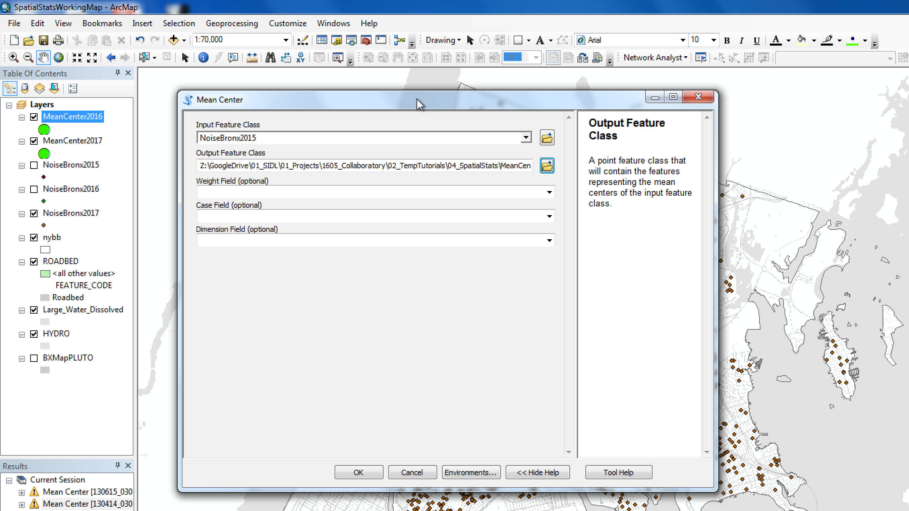
Once you finish calculating the Mean Center for the three years zoom in and take a look at their distribution. From their proximity we can infer that the general distribution of noise complaints in for October in the Bronx hasn't changed that much in the years between 2015 and 2017.
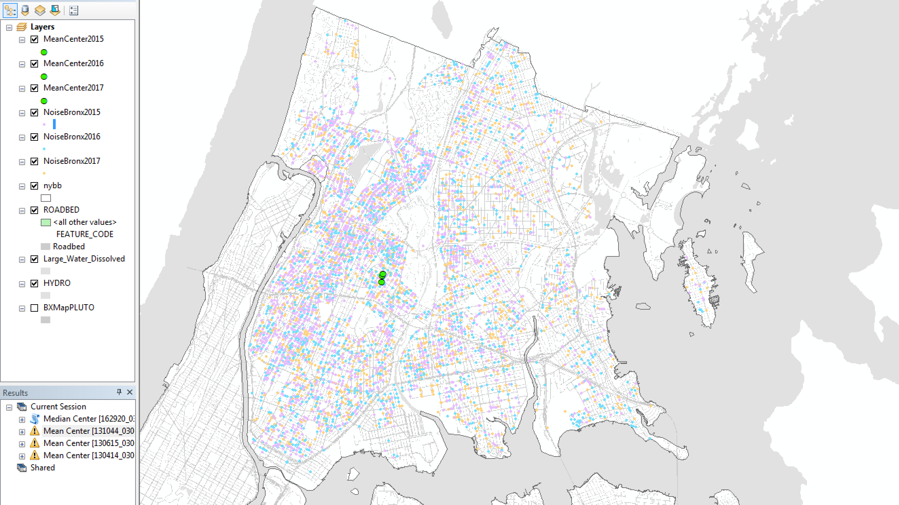
Standard Distance:
Another way of analyzing the geographic distribution of a dataset is to measure the dispersion of the features around their center. This value is measured by calculating the average distance of the features to the Mean Center and how much those distances vary from the average.
To perform this calculation use the
Standard Distancetool located in theMeasuring Geographic Distributionstoolbox in theSpatial Statistics Tools.This tool will let you calculate the standard distance at 1, 2 and 3 standard deviations.
If you wish, you can also weight this calculation using a specific field in the data.
Note that this tool does not indicate the presence of clustering or specifically identifies any clusters. There are other specific tools for that.
Standard Deviational Ellipses:
The Standard Deviational Ellipse or Directional Distribution, as it is also called, works in a very similar manner as the Standard Distance, however it measures the distribution in the x and y axis independently and thus measures the distribution as well as the directionality of this distribution.
To perform this calculation use the
Directional Distributiontool located in theMeasuring Geographic Distributionstoolbox in theSpatial Statistics Tools.As with the Standard Distance calculation, this tool also allows you to measure the directional distribution at 1, 2 and 3 standard deviations and to use a field in the dataset as a weight in the calculation.
If we apply this calculation on our datasets we will see that the directionality stays pretty much the same while the dispersion moves a bit southwards for 2016 and a bit northwards for 2015. However, all three distributions are stay very close to each other.
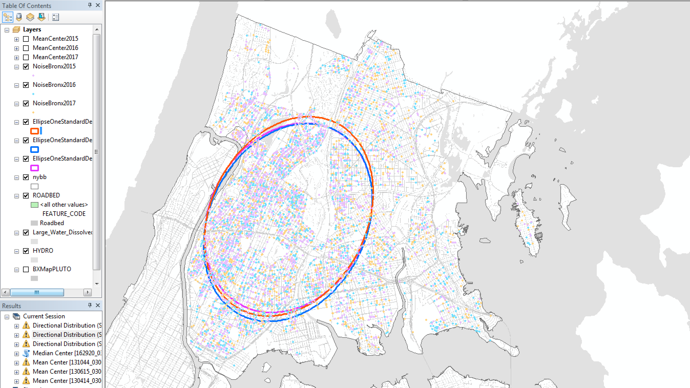
Is the Data Clustered, Dispersed, or Randomly Distributed?
To figure out if there are any significant patterns in the data you should begin by testing wether or not your data is clustered, dispersed, or randomly distributed. The idea here is to measure the probability that the distribution of your data is just due to randomness. If the results of your analysis show that it is highly unlikely that the distribution of your data was the result of randomness, it is safe to assume that there is something more at play here and you should pursue your analysis.
Average Nearest Neighbor:
The first way to analyze distribution is to measure the average distance to the nearest neighbor. This analysis will measure the distance from every feature to its nearest neighbor and then compare it to the distance in a randomly generated distribution. A significant difference between the two scenarios will point towards clustering or dispersion in your data.
To perform this calculation use the
Average Nearest Neighbortool located in theAnalyzing Patternstoolbox in theSpatial Statistics Tools.To illustrate this type of analysis let's use the
Average Nearest Neighbortool on the 2017 noise complaint data.One crucial thing to take into account here is that the
Nearest Neighborcalculation will vary dependent on the area on which it is performed. For more accurate results make sure to add the exact area measurement for the area on which you will perform this calculation. In this case, the area for the Bronx is 1186815932.04 (square feet).In addition, make sure you check the option to
Generate Report. This will give you a detail view of the results.
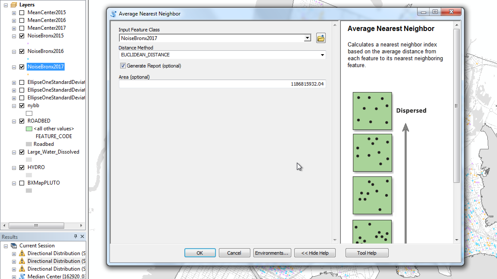
Once you run the tool, look for the location where ArcGIS is saving the report in the result window and open the report with your internet browser. It should look something like this:
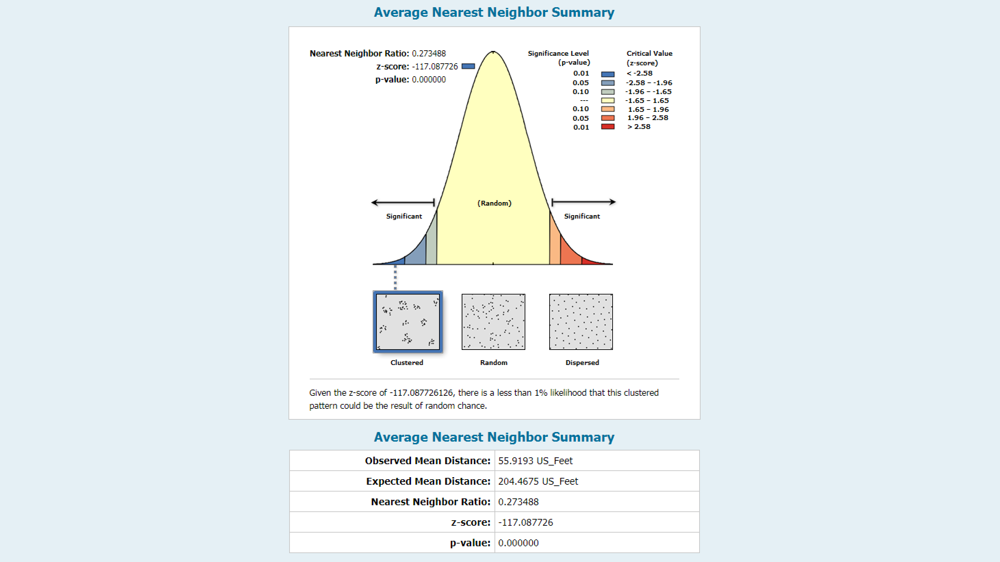
The
Average Nearest Neighborreport tells us that the data is clustered and it gives us a z-score of -117.08 and a p-value of 0.0000000. This means that the probability of our data being distributed like this due to randomness is very very small, and that we can say with 99.9% confidence that the distribution is not random.This tool, however, does not tell you where the clusters are, it is just a global measurement of distribution.
Getis-Ord General G:
Sometimes in addition to analyzing the location of your data, you also want to take into account the value of one of its attributes to figure out if high or low values are clustered or dispersed, or if they are randomly located. To do this use the
Getis-Ord General Gtool. This measurement assumes that features in your dataset are related to each other based on their location and on a common attribute.Because our noise complaint data doesn't have any value attribute, we must first join it to the block groups, counting the number of occurrences in each of them, before performing the statistical analysis.
Go ahead and perform a spatial join between the noise complaints for 2017 and the Bronx block groups.
Once the join is done create a simple cloropleth to quickly visualize the data. As you can see, it is not clear from the map whether or not high or low values cluster:
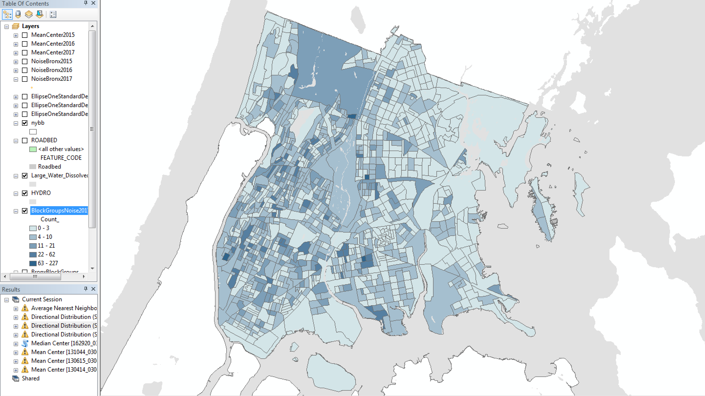
Now we can perform the
Getis-Ord General Ganalysis. The tool is calledHigh/Low Clustering (Getis-Ord General G)and is located in theAnalyzing Patternstoolbox in theSpatial Statistics Tools. Make sure you select theCount_field as theInput Fieldand that you check the option toGenerate Report.Once the analysis is done, open the report on your browser. As you can see, the high values are clustered and there is less than 1% chance this distribution could be the result of random chance.
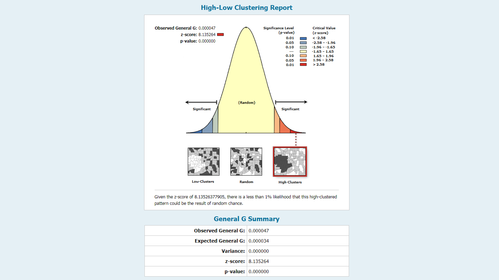
If you wanted to be more precise or to get a better understanding of the clustering or dispersion patterns you could also perfomr the
Getis-Ord General Ganalysis at different threshold distances. In the tool menu, you can input a specific amount to test the distribution at that particular distance. Doing this multiple times at different distances and comparing z-scores and G indices would tell you at what distance the clustering or dispersion is the strongest.Ripley's K Function:
If you want to determine more accurately at what distance the clustering or dispersion is the strongest, you should use the
Ripley's Ktool. This analysis works similarly to theNearest Neighbor, but instead of comparing the distance from every point to its nearest neighbor, it compares the distance from every point to all its neighboring features.In addition, the
Ripley's K Functionmeasures the clustering or dispersion at multiple distance intervals and thus can provide a better understanding of at what distance the clustering or dispersion is the strongest.Also, the
Ripley's K Functioncan generate multiple permutations of the comparison randomly generated sample, which will give your result a more robust confidence interval.To perform this calculation use the
Multi-Distance Spatial Cluster Analysis (Ripleys K Function)tool located in theAnalyzing Patternstoolbox in theSpatial Statistics Tools.Spatial Autocorrelation (Monran's I):
Spatial autocorrelation represents the idea that similar values are correlated in space. A typical example of spatial autocorrelation is the clustering of high-value properties. In other words the high value of a particular property tends to be correlated to the high values of surrounding properties.
The
Moran's Ifunction, which measures spatial autocorrelation, identifies clusters by looking at the values as well as the location of the features.To perform
Moran's Ianalysis it is best to have your features aggregated. Similar to what we did with the count of noise complaints by block group, this time we will create a grid of squares and count the number of complaints per square, in order to perform the spatial autocorrelation analysis.Once we run the analysis,
Moran's Iwill look at the relationship between the value of each feature and the value of its surrounding features, and compare that to the relationship between the value of each feature and the value of the rest of the features (not just the neighboring ones). A significant difference will indicate clustering or dispersion.Note that the size of the geographic unit of measurement, in this case the grid that we will create, will greatly affect the result of the analysis. It is crucial to create a grid that will have cells with at least one point, but also provide a good range of values throughout the study area.
To create the grid use the
Create Fishnettool located in theSamplingtoolbox in theData Management Tools.In the
Create Fishnetmenu make sure you use the Bronx Block Groups as theTemplate Extent, that you set your cell size to 500 x 500, and that you choosePolygonas theGeometry Type. Also, there's no need to generateCreate Label Points.
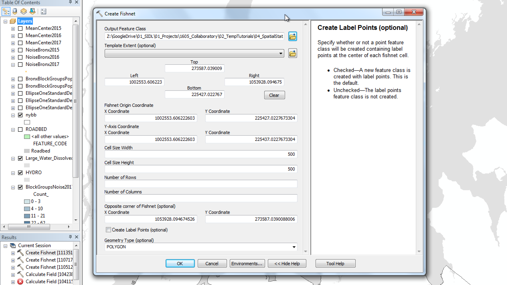
Because we don't have data for areas outside the Bronx, once you've created your fishnet, go ahead and select only the grid cells that intersect with the Bronx and export them as their own layer.
Now go ahead and join the Bronx grid cells to it the noise complaints for 2017. Create a simple cloropleth to verify the join:
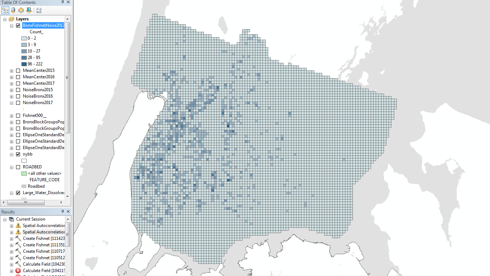
Finally, perform the
Spatial Autocorrelation (Moran's I)analysis, located in theAnalyzing Patternstoolbox inSpatial Statistics Tools.As with other statistics you can set a threshold distance and generate a report. To get more detailed results you might want to repeat this analysis using different threshold distances and different conceptualization of spatial relationships, depending on the nature of your data.
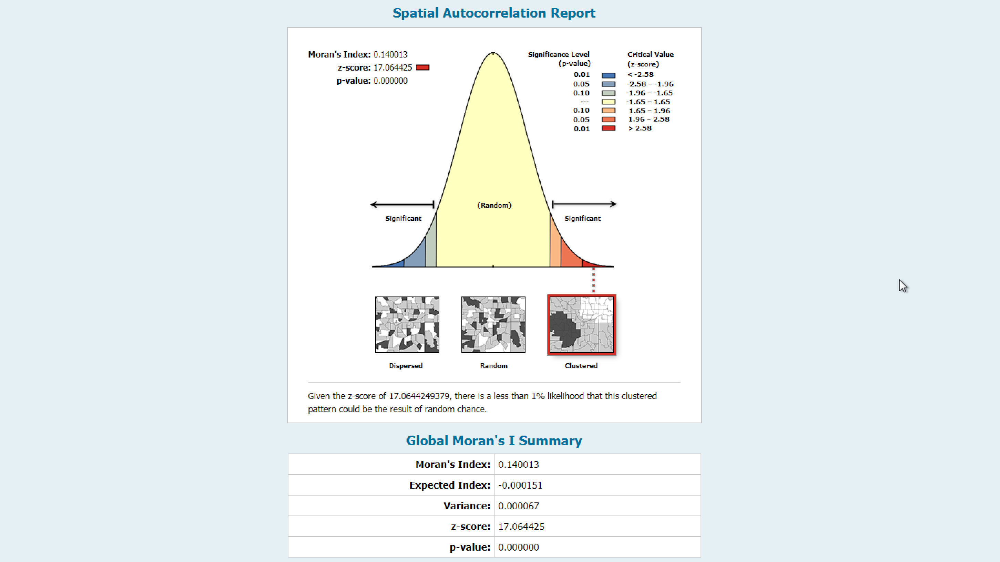
As you can see in the text, the results of Moran's I point towards a clustering of grids with high values. We can say that there's is less than 1% chance that this configuration is due to random chance.
Identifying Clusters
The previous statistical metrics were useful in analyzing overall patterns. The told us if our data was overall clustered or dispersed, or randomly distributed. However, even though they noted the presence of clustering, they did not help us in locating those clusters. The Cluster and Outlier Analysis (Anselin Local Moran's I) tool, and the Hot Spot Analysis (Getis-Ord Gi*) will be the ones to use when wanting to identify and map those clusters. These are local metrics of clustering, as opposed to the previous ones which were global.
In this tutorial we will use the
Hot Spot Analysis (Getis-Ord Gi*)tool. This tool compares the values of each feature to the values of neighboring features within a specific distance and produces a graphical output with clustering metrics.To perform the analysis just use the
Hot Spot Analysis (Getis-Ord Gi*)tool located in theMapping Clusterstoolbox in theSpatial Statistics Tools.Note that changing the
Distance Band or Threshold Distanceoption will affect your results. Smaller distances will generate smaller clusters, and vice versa. When left blank, ArcMap will automatically calculate a threshold distance and apply it to the calculation.The result of this analysis produces a new shapefile with the following data:
Count_ (based on the previous dataset)
GiZScore, representing the specific z-score for that polygon.
GiPValue, representing the p-value for that specific polygon.
Gi_Bin, representing the category in which this polygon falls. These categories are:
Cold Spot - 99% Confidence
Cold Spot - 95% Confidence
Cold Spot - 90% Confidence
Not Significant
Hot Spot - 90% Confidence
Hot Spot - 95% Confidence
Hot Spot - 99% Confidence
And the new shapefile will be automatially symbolized to represent these categories.
Your final map should look something like this:
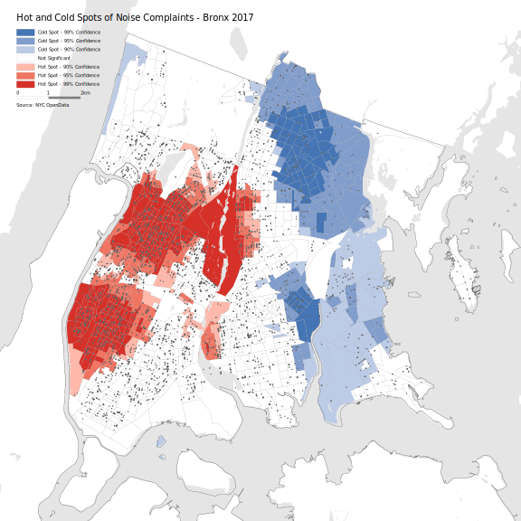